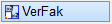

")
")
Verändern der Größe von Teilzeichnungen.
Sie können Skizzen, Schrauben- und Schweißnahtsymbole und Übersichten anpassen. Die Zeichenelemente behalten den Maßstab. Texte können mit den gleichen Faktoren verändert werden.
|
Achtung: |
|
·Verwenden Sie zum Dehnen oder Verzerren von Bewehrungen die Dehnen-Funktion im Formstahl-Menü. » Bewehrung dehnen ·Wenn eine Teilzeichnung, ein Detail usw. mit Vermaßung vergrößert oder verkleinert werden soll, nutzen Sie die Funktion [Konst2 | Maßkor]! |

So wird's gemacht:
§Ziehen Sie einen Rahmen durch das Anklicken von zwei Punkten um die zu dehnenden Zeichenelemente oder klicken Sie einzelne Elemente an. [1.Punkt/Element]; [2.Punkt].
-Die Teilzeichnung wird markiert. Zeichenelemente, die vollständig im Rahmen liegen, werden verschoben. Die Linien, die nur mit einem Punkt im Rahmen liegen, werden gedehnt oder gestaucht. Wenn Sie einzelne Linien anklicken, wird nur die angeklickte Teillinie markiert.
-Um Elemente wieder abzuwählen, klicken Sie im unteren Funktionsbereich auf Entfer. Ziehen Sie einen Rahmen um die entsprechenden Elemente oder klicken Sie einzelne Elemente an. Bei gedrückter Umschalttaste (Shift) wird automatisch der Entfer-Modus aktiviert – am Cursor wird ein Minuszeichen eingeblendet.
§Bestätigen Sie die Auswahl mit Rechtsklick.
§Wählen Sie, ob ohne Eingabe von Differenzen oder mit einer Differenzeingabe die Lage des angeklickten Festpunktes bestimmt werden soll. [Festpu. X]; [Festpu. Y].
Nutzen Sie ggf. auch die Hilfsfunktionen.
Ohne Differenzangabe (Retaus): Klicken Sie für die X- und Y-Koordinate jeweils einen Bezugspunkt an.
Mit Differenzangabe (Retan): Klicken Sie jeweils eine Bezugslinie an und geben Sie die Differenz mit dem entsprechenden Vorzeichen ein. Bestätigen Sie die Eingabe mit der Eingabetaste.
§Geben Sie den Verzerrfaktor jeweils in X- und Y-Richtung ein. [X-Faktor]; [Y-Faktor]. Bestätigen Sie die Eingaben mit der Eingabetaste.
Kreise werden nur mit dem Faktor für die X-Richtung gedehnt. Wenn Sie im unteren Funktionsbereich die Option [m.Text] eingestellt haben, werden Texte mit dem X-Faktor in der Breite und mit dem Y-Faktor in der Schrifthöhe geändert.
Zugehörige Referenzen: